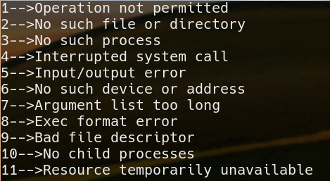
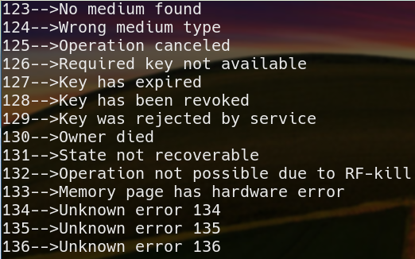

为防止和正常的返回值混淆，库函数的调用一般并不直接返回错误码，而是将错误码（是一个整数值，不同的值代表不同的含义）存入一个名为 errno 的全局变量中，errno 不同数值所代表的错误消息定义在 <errno.h> 文件中。如果库函数调用失败，可以通过读出 errno 的值来确定问题所在，推测程序出错的原因，这也是调试程序的一个重要方法。
配合 strerror和perror两个库函数，还可以很方便地查看出错的详细信息。
strerror函数
- strerror 在 <string.h> 中声明，用于获取错误码对应的消息描述。
- 函数声明：
1
char *strerror(int errno);
函数说明：strerror()用来依参数errno 的错误代码来查询其错误原因的描述字符串，然后将该字符串指针返回。
返回值：返回描述错误原因的字符串地址。
在gcc4.4.7版本中，定义了130多个错误代码，我们用程序把它们全部显示出来。
- 示例
1
2
3
4
5
6
7
8
9
10
11
int main()
{
int errorno;
for(errorno=0; errorno<150; errorno++)
{
printf("%d-->%s\n", errorno, strerror(errorno));
}
}
输出结果
 
一共有130多个错误代码和描述，上面的截图只显示了前5条和最后5条。这些错误代码和描述看一下就行了，不需要记住。
perror 在 <stdio.h> 中声明，用于在屏幕上最近一次系统错误码及其消息描述，在实际开发中，我们写的程序运行于后台，在屏幕上显示错误信息没有意义。
1 |
|
运行结果
errno的细节
- 调用库函数失败不一定会设置errno
如果库函数调用失败，库函数会设置errno的值，程序员通过 errno 的值来判断出错的具体原因，但是，并不是全部的库函数在调用失败时都会设置errno的值，那么，哪些库函数会设置errno的值呢，要看函数的说明，例如fopen函数，在命令行下输入man fopen，在诸多的文字中，有以下行说明文字。
1 | The fopen() function may also fail and set errno for any of the errors specified for the routine open(2). |
不属于系统调用的函数不会设置errno，属于系统调用的函数才会设置errno。
errno不能作为调用库函数失败的标志
在 C 语言中，如果库函数被正确地执行，那么 errno 的值不会被清零。换句话说，errno 的值只有在一个库函数调用发生错误时才会被设置，当库函数调用成功运行时，errno 的值不会被修改，当然也不会主动被置为 0。也正因为如此，在实际编程中，判断函数执行是否成功还得靠函数的返回值，只有在返回值是失败的情况下，才需要关注errno的值。程序员可以不用errno
关注errno的目的是为了获取更详细错误信息，这些错误信息对程序员诊断程序可能会有帮助，但不是必须的。